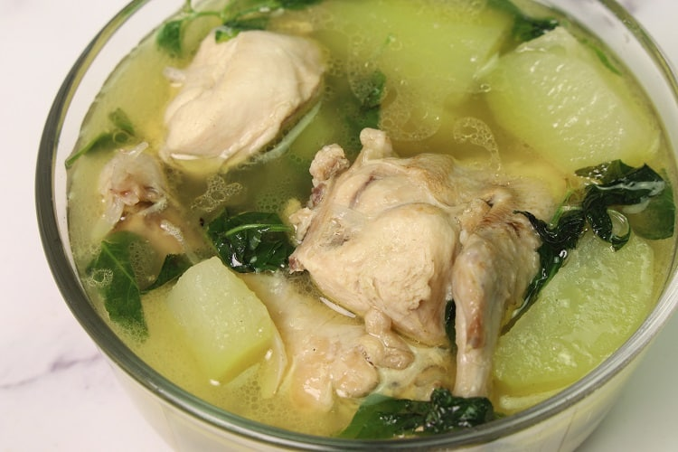

How to Cook Tinola

Tinola one of the most common Filipino Dishes
Tinola is one of the most delicious and popular Pinoy dishes. It is a soup with a Chicken and mixed vegetables that makes it healthy and delicious.
Ingredients:
- Chicken(tinola cut)
- Chayote(sayote)/Papaya
- Ginger
- Onion
- Garlic
- Fish sauce/paste
- Black Pepper
- Moringa Leaves/Malungay leaves
- Chilli Pepper
Procedure:
- Sauté the garlic, onion, and ginger
- Put-in the chicken and cook until color turns light brown
- Add the fish sauce(to taste), and mix well
- Add water and put to boil. Simmer it for 45 minutes
- Add the green papaya wedges and simmer for 5 minutes
- Add Moringa leaves
- Add salt and pepper to taste>
- Serve and andjoy! ^,^